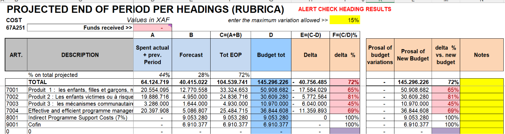

PREPPY - Budget Forecasting & Expenditure Planning
Enable your project managers to anticipate spending and manage budgets with confidence.
Practical Solution for Project Management
PREPPY helps Project Managers forecast spending, plan expenditures and identify budget risks early. It provides clarity on where money will go, how much is available and what risks might arise.
What PREPPY Does
PREPPY helps you:
Forecast Future Spending
Project managers can anticipate expenses based on historical data and project plans.
Compare with Budgets
See how forecasted spending aligns with available budgets and donor allocations.
Identify Risks Early
Spot potential budget shortfalls or overruns before they become critical problems.
See PREPPY in Action
PREPPY's interface is designed for practical use. Every element serves a clear purpose and helps teams work more efficiently.
Whether you're just starting or managing complex operations, PREPPY adapts to your needs.

Practical Use Cases
For Project Managers
Anticipate spending patterns, identify budget risks early and manage stakeholder expectations about financial constraints.
For Finance Teams
Create reliable budget forecasts, provide early warnings about potential overruns and support better budget planning.
For Donors and Funders
Receive transparent information about how funds will be spent and advance warning if spending might deviate from budgets.
Frequently Asked Questions
What is PREPPY used for?
PREPPY helps Project Managers forecast spending, plan expenditures and identify budget risks early. It provides clarity on where money will go, how much is available and what risks might arise.
Who should use PREPPY?
PREPPY is designed for organizations managing projects and operations systematically.
Is PREPPY suitable for small NGOs?
Yes. PREPPY is part of the DESYNET toolkit, which is made available through a simple annual contribution, making it accessible even to small NGOs and associations.
How does PREPPY integrate with other DESYNET tools?
PREPPY works as part of the complete DESYNET toolkit. All tools coordinate to support comprehensive project management.
Ready to Improve Your Operations?
Contact Paolo to discuss how PREPPY can help your organization.
Get in Touch About PREPPY